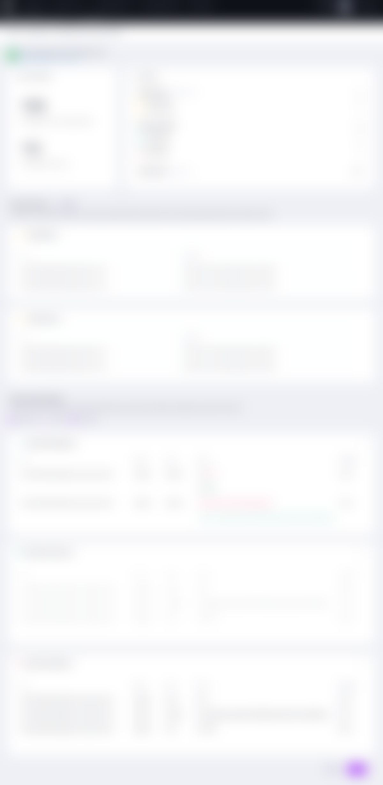

Viz Flowics (Vizrt) · Product Design · 2024
Data Augmentation
Diseño de un sistema de edición masiva de datos para una plataforma SaaS B2B de gráficos en vivo: edición en Google Sheets, simulación de cada cambio antes de aplicarlo y trazabilidad completa de las importaciones.
🔒 Imágenes desenfocadas por confidencialidad — incluyen datos internos de la empresa.
Única diseñadora
del proyecto
Lideré el diseño de punta a punta, desde la investigación hasta el handoff a desarrollo, en coordinación con producto e ingeniería. Diez meses de trabajo durante 2024, con entrevistas y pruebas de usabilidad con usuarios de la plataforma.
-80%
tickets de soporte vinculados a la edición de datos
15
usuarios en entrevistas y pruebas de usabilidad
3
pasos: exportar, editar y simular antes de importar
10
meses de proyecto, de la investigación al lanzamiento
01
Contexto
Datos críticos para la emisión, editados registro por registro
Las Data Augmentations complementan la información de los proveedores de datos con valores propios de cada producción, como colores, imágenes o abreviaturas de equipos, que luego se utilizan en los gráficos en vivo. A medida que las cuentas crecían, también lo hacían estos conjuntos de datos.
No existía una forma de editarlos a gran escala: cada registro se modificaba manualmente dentro del producto, o se solicitaba al equipo de soporte. Tampoco había un proceso de validación, por lo que un error en una edición masiva llegaba directamente a producción, sin previsualización ni registro de lo modificado.
El riesgo: cuanto más grande era el conjunto de datos, más costoso resultaba cualquier error, en un contexto de emisión en vivo donde no hay margen para corregir sobre la marcha.
02
Investigación
Entender cómo trabajaban los equipos antes de diseñar
Realicé entrevistas y pruebas de usabilidad con 15 usuarios de la plataforma para comprender cómo gestionaban estos datos y dónde se originaban las fricciones. El análisis permitió identificar cuatro necesidades principales:
03
Solución
Editar fuera del producto, validar dentro de él
Diseñé un flujo en tres pasos que aprovecha una herramienta que los equipos ya dominaban y concentra la validación dentro de la plataforma:
04
Reporte de simulación
Cada cambio, visible y controlable antes de confirmar
El reporte de simulación es la pieza central del sistema. Presenta primero los errores que impiden la importación, con su causa y código, para que puedan corregirse en la planilla y actualizar el reporte sin reiniciar el proceso.
Luego detalla cada actualización, inserción y eliminación, con el valor anterior y el nuevo. Cada grupo de cambios puede incluirse o excluirse de forma independiente, lo que permite aplicar una edición de manera parcial y controlada.

Reporte completo: errores con su causa, cambios agrupados por tipo y selección de los grupos a importar.
05
Confirmación y trazabilidad
Un cierre claro y un historial auditable
Al confirmar, el sistema resume los cambios aplicados y actualiza el panel con el nuevo total de registros. Cada importación queda registrada con su autor y su fecha, de modo que cualquier edición masiva resulta trazable.
Confirmación con el resumen de cambios aplicados y panel actualizado con el registro de la última importación.
06
Validación e impacto
Ediciones masivas sin riesgo para producción
El flujo se validó con los mismos 15 usuarios que participaron de la investigación, iterando sobre la claridad del reporte y la recuperación ante errores antes del lanzamiento.
-80%
tickets de soporte vinculados a la edición de datos.
Self-serve
Los equipos realizan las ediciones rutinarias sin depender de soporte, lo que redujo la fricción por demoras.
Los equipos pasaron de editar registro por registro a gestionar conjuntos de datos completos con confianza: la simulación previa elimina las sorpresas y el historial de importaciones aporta trazabilidad sobre cada cambio.
07
Rol y criterios
Rol y criterios de diseño
Como única diseñadora del proyecto, fui responsable de la investigación, la definición del flujo, el diseño de interfaz y el handoff a desarrollo.
- Diseñar sobre hábitos existentes. Integrar una herramienta que los usuarios ya dominaban, en lugar de replicarla dentro del producto.
- Prevenir antes que corregir. La simulación traslada la detección de errores a un momento sin consecuencias.
- Control granular. Cada grupo de cambios se confirma de forma independiente, sin forzar decisiones de todo o nada.
- Trazabilidad por defecto. Cada importación queda registrada sin pasos adicionales para el usuario.
En retrospectiva: definiría desde el inicio una línea de base del tiempo que demandaba cada edición, para cuantificar el ahorro además de la reducción de tickets. También evaluaría incorporar la edición directa en el producto para cambios puntuales, reservando el flujo con planilla para las ediciones masivas.